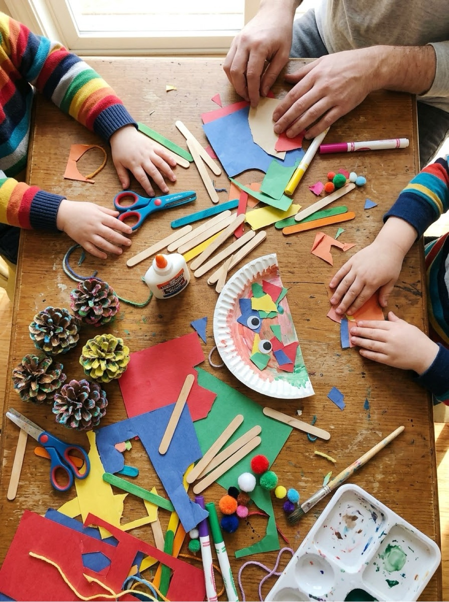

Crafts for Kids Printable craft cards, honest materials lists, and steps that actually work
Welcome to the craft corner: free crafts for kids ages 3 to 8, and every single one comes with a printable project card, a short materials list and steps written the way you would explain them to a friend. Pick by season, by what is already in your craft drawer, or by how much mess you can face today — everything prints free, with no signup.
Last updated: October 21, 2026

Quick Answer
Every craft in this section is free, and every one has a printable card with the materials, the steps and one hard-won tip on a single sheet. Start with the paper mache recipe for a weekend project, popsicle stick crafts for a rainy afternoon, or the seasonal card packs — Halloween, fall and winter — when you need something for today. The crafts suit ages 3 to 8, and grown-up steps are clearly marked on every card.
At a Glance
- Ages: 3–8 (every craft page is age-marked)
- What you get: 6 craft collections, with a free printable card for every single craft
- Supplies: basics — paper, glue, washable paint, craft sticks and recyclables
- Cost: Free — no signup, no email
🎃 Seasonal Crafts
🧺 Crafts by Material
📅 More Craft Activities
🧭 How to Choose a Craft in 30 Seconds
Choosing the craft is somehow always the longest part, so use the shortcut that works in real kitchens: decide by time first, then by mess, then by age. If you have ten minutes, you want a no-drying craft — leaf rubbings, a stick puzzle, a cotton-ball picture. If you have a free afternoon, that is when paper mache and paper making earn their place, because both need things to soak, layer or dry while life happens around them.
Mess is the second filter, and every card in this section carries an honest mess rating. Low-mess crafts can happen on a bare table. Paint crafts want a covered table and a paint shirt. And one project — paper mache — wants the full setup: covered table, apron, and a spot where a dripping balloon can live undisturbed for two days. Knowing that before you start is the difference between a lovely afternoon and a regret.
Age is the last filter, and it is mostly about two skills: scissors and patience. Crafts marked for ages 3 and up either skip scissors entirely or hand the cutting to a grown-up first, so little hands only do the satisfying parts — pressing, gluing, stamping, sprinkling. The multi-step builds, like the log-cabin stick house and making paper from scratch, sit at 6 and up, where the waiting and the sequencing are part of what makes them proud of the result.
🎒 The Craft Drawer That Covers Almost Everything
You do not need a craft store in your house. One drawer or basket with these staples covers nearly every project in this section — and most of what young kids invent on their own:
- White glue (PVA) and glue sticks — the white glue is the one that really holds
- Washable paint in a few colors, plus paintbrushes in two sizes
- Construction paper and white card — card survives glue and paint far better
- Craft sticks — save them from ice pops, or buy one bag and it lasts for months
- Kid scissors and a pair of grown-up scissors
- Cotton balls, string, and a bag of googly eyes
- Markers and crayons with the wrappers peeled off (for rubbings)
- The recycling bin: toilet rolls, egg cartons, newspaper and scrap paper
🧒 Crafts by Age: What Changes
At 3 and 4, crafting is sensory first and a picture second. The wins are stamping, rubbing, pressing cotton balls into glue, and rolling painted acorns around a tray. Attention lasts about ten minutes, so the crafts for this age are built to look finished fast — a ghost is a ghost the moment the streamers go on. Scissors at this age are a grown-up tool used before the craft starts.
At 5 and 6, kids can follow a sequence of four or five steps, fold paper on purpose, stack and glue with real intent, and start to plan — "mine will have purple wings." This is the golden age for the card packs in this section: hand them the printed card and let them read off the materials and hunt for them in the drawer themselves.
At 7 and 8, multi-session projects stop being frustrating and start being the point. Paper mache over two days, a stick house that needs its walls to dry before the roof, paper made from scratch — the waiting becomes engineering. These are also the kids who start varying the recipe, which is exactly where you want them: the card is the starting point, not the ceiling.
🎨 More Free Fun for Moms & Kids
📚 Free Resources Hub
Every free tool, printable and activity on the site in one place. Browse the hub.
🎨 Free Coloring Pages
Hundreds of free coloring pages for the days when paint is not happening. See the coloring pages.
🧩 Learning Activities
Printable learning activities for toddlers and preschoolers — letters, numbers, shapes and more. Browse activities.
✏️ Older Kids
Worksheets and activities for ages 5–8 when your crafter is ready for bigger challenges. Visit Older Kids.
❓ Frequently Asked Questions
Are these crafts really free?
Yes. Every craft page and every printable craft card in this section is free to print at home — no signup, no account, no email and no payment. The projects themselves are built from basic supplies and recyclables, so the making is close to free too.
What ages are these crafts for?
These crafts for kids cover ages 3 to 8, and every craft page states its age range up front. The youngest crafts avoid scissors or give the cutting to a grown-up first; the oldest ones, like making paper and the log-cabin stick house, involve several steps and some waiting, which suits ages 6 to 8.
I don't have many craft supplies. Where should I start?
Start with what the recycling bin gives you: the Halloween crafts use toilet rolls, an egg carton and a paper plate, and the fall crafts mostly need leaves, an apple and paper. Each craft card lists exactly what that project needs, and the tips include swaps for anything you are missing.
How messy are these crafts, honestly?
Every craft card carries a mess rating. Low-mess projects — rubbings, puzzles, paper chains — are fine on a bare table. Paint projects want a covered table. Paper mache is the one genuinely messy project in the section, and its page explains the setup that keeps it contained.
Can I print the craft instructions?
Yes — that is the idea. Every craft has a printable card with its materials, numbered steps and a tip, designed for US Letter paper. Collections print as one PDF with a complete card per page, so you can work from paper instead of a phone screen.